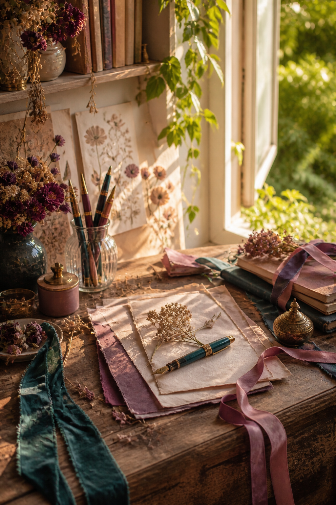
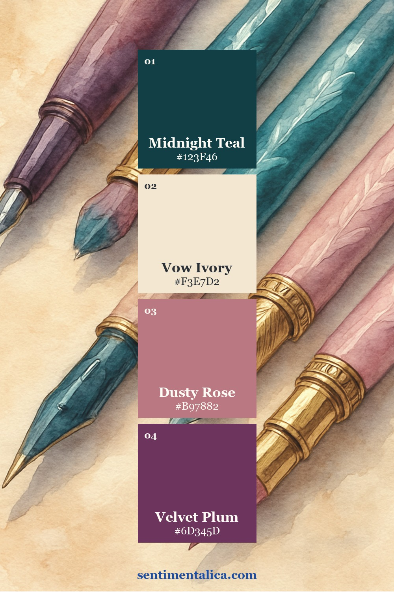
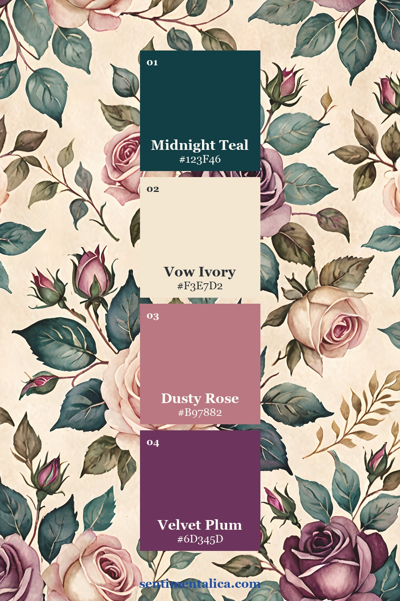
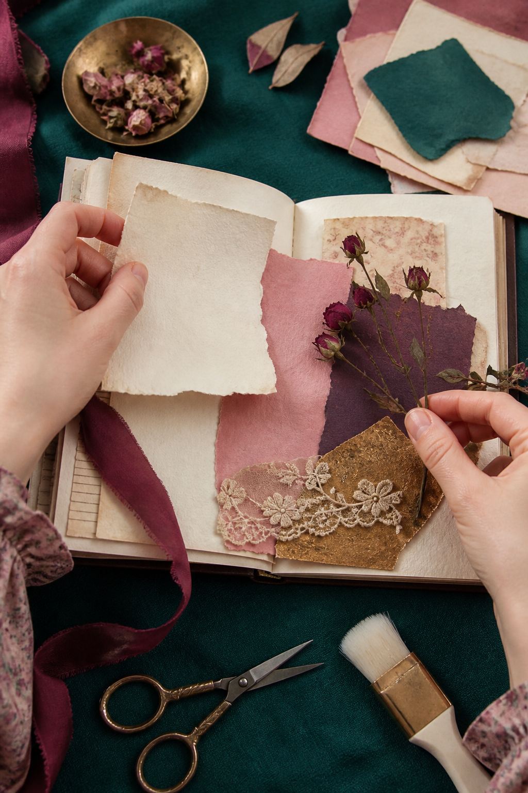
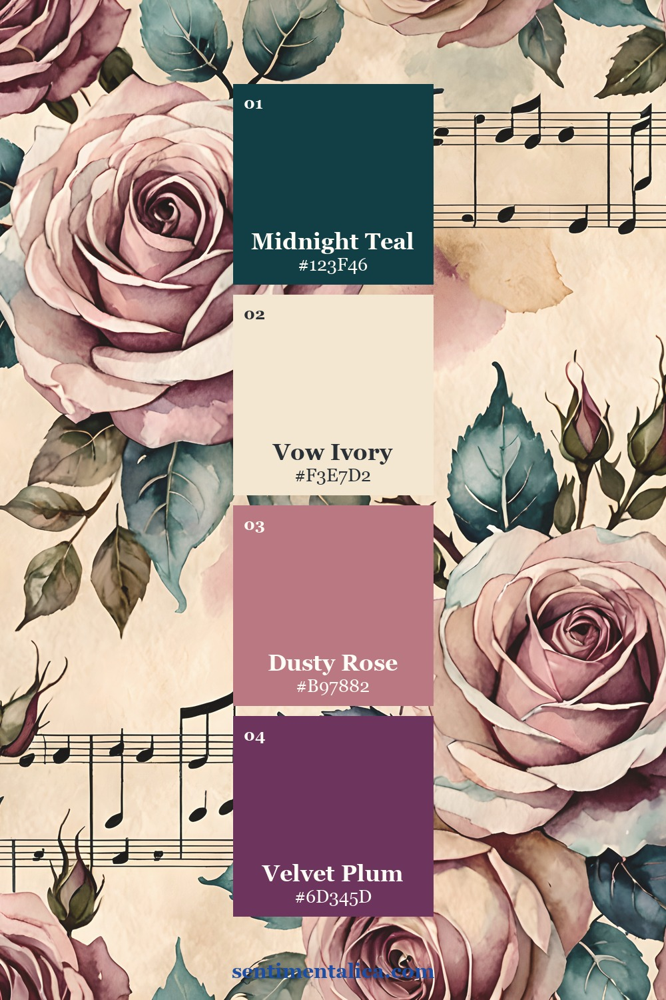
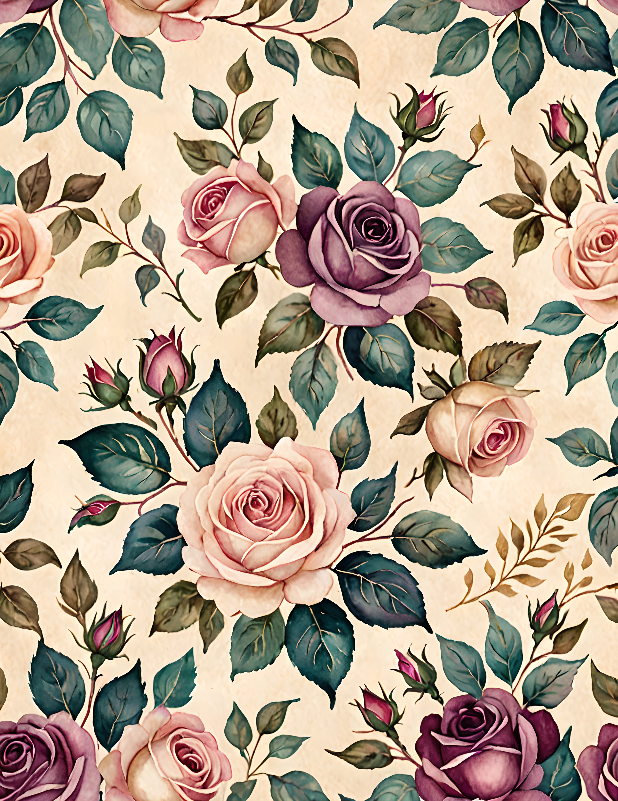
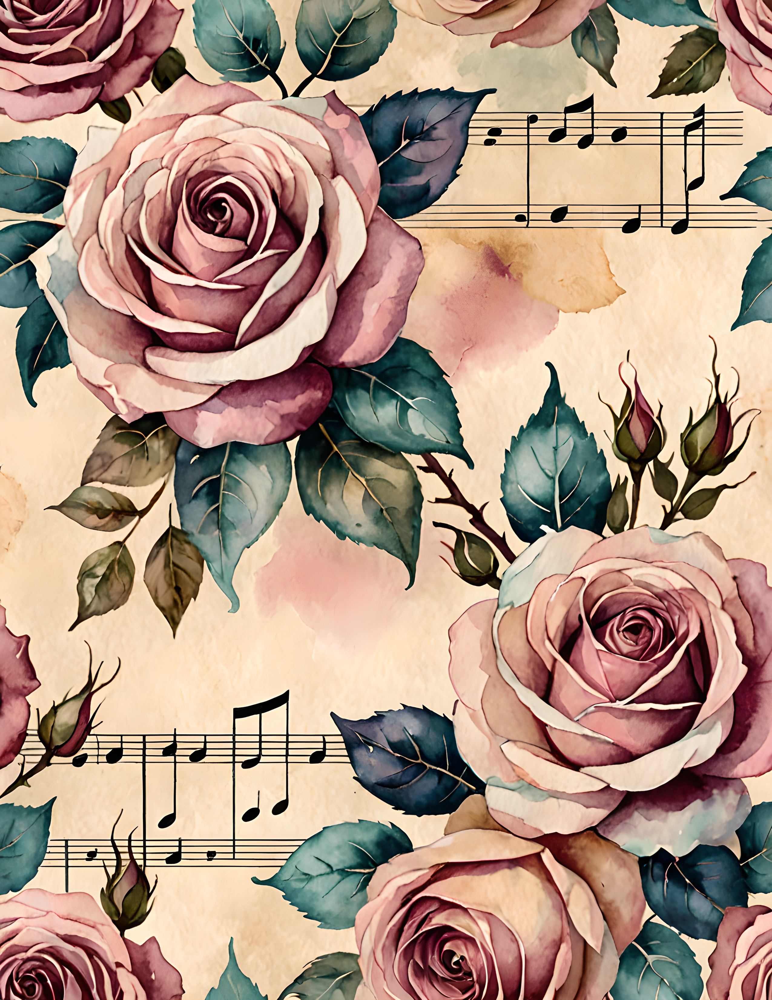

A romantic junk journal does not have to be pale or sugary. The most memorable pages often pair softness with one shadowy color: deep teal beside dusty rose, warm ivory beside plum, and a restrained touch of old gold. That contrast gives a spread atmosphere before you add a single word.

The four-color Velvet Vow palette
Use Midnight Teal as the dark anchor, Vow Ivory as the light neutral, Dusty Rose as the supporting mid-tone, and Velvet Plum as the accent. Let ivory cover roughly half the spread. Teal can define the outer edge or pocket; rose can repeat in two smaller places; plum should appear only where you want the eye to stop.

Begin with the darkest piece
Place a teal paper strip, ribbon, or painted edge first. Keep it narrow enough that the page still breathes. Next, add a large ivory writing block. The pale space prevents romantic details from becoming visually crowded and gives you somewhere useful to journal.

Repeat rose, reserve plum
Dusty rose is the bridge between dark teal and ivory, so it can appear in a torn layer, a thread, and one tiny tab. Save plum for a focal element: a flower, seal, label edge, or short line beneath the date. Antique gold is optional and should behave like light—one clip, one inked border, or one metallic fleck is enough.

Use pattern without losing writing space
Choose one patterned page as the showpiece and cut a second pattern into a much smaller shape. Do not scatter equal-sized motifs across the spread. A large floral area beside a clean ivory card feels intentional; several competing florals feel like samples waiting to be sorted.

See the palette across the collection



A simple romantic spread formula
Try a five-piece composition: one dark border, one ivory journaling card, one rose pattern, one plum detail, and one tactile element such as ribbon or lace. Leave an open margin around at least two sides. Add the date last, after you know where the eye naturally rests.
The Velvet Vow commercial-use watercolor image pack is a coordinated source for this romantic palette. Use its pages as statement papers, backgrounds, or cropped accents while keeping your personal writing and collected materials at the center.
Image note: Atmospheric and process visuals in this article were created with AI and curated by Sentimentalica. The displayed collection pages are authentic listing artwork.